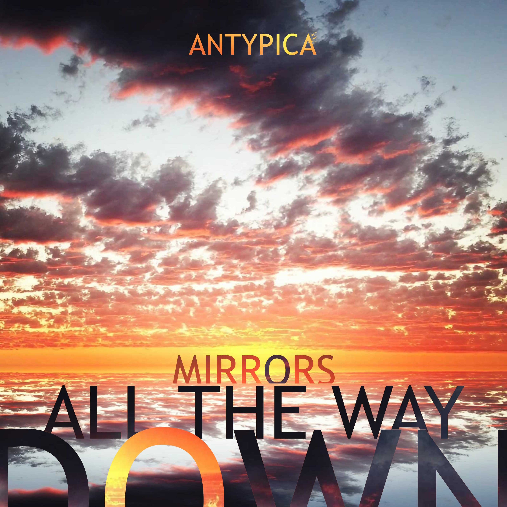

Each song tells a story that ends as follows:
Sisyphus's Escape
Sisyphus Escaped.Epicycles
Ends as it began; you made convoluted excuses so you didn't learn anything.Yesterday's Supercomputer
Culminates in a young spider busily wrapping up then decapitating an older spider.Fractional Personality Disorder
Ends in getting way too drunk as the sober version of yourself wasn't working either.Take Me To Hell
Ends in a requiem for a resistance fighter.Mercuriella
Fails to keep up with someone's mercurial moods.You're Very Special
Ends in a question. Are you?Fertilized Egg
Ends in pregnancy.Unsympathetic Vibrations
Ends in an argument between a couple of small but aggressive animals.Sleeping On A Ledge
Ends with a sunrise on top of a mountain.Meditalien
Lands back on earth after locking eyes with a meditating alien.Reaching For The Stairs
Ends with realising someone you love will run out of fight.Hiding In A Dream
Ends waking up from a bad dream where you were not yourself.Spaghettification
Ends with your life flashing before your eyes as you fall into the event horizon of a black hole.
Music without lyrics or accompanying visuals is just a river of feelings, so imagine your own stories, imagery and associations.